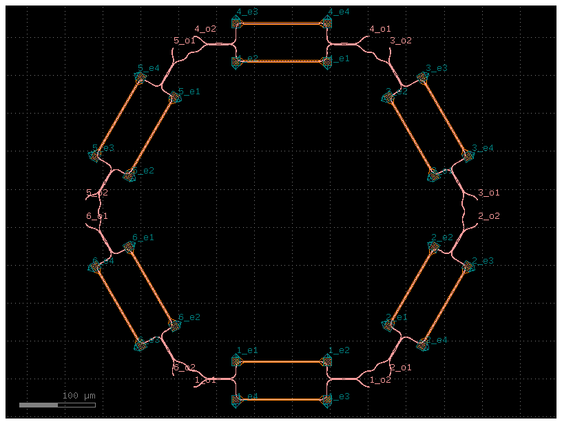
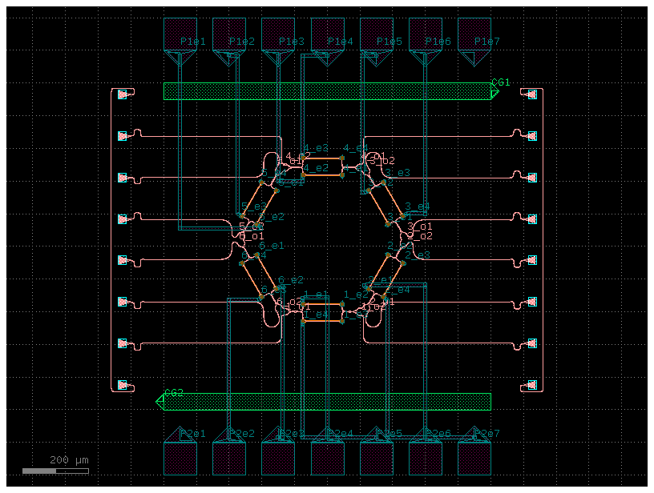
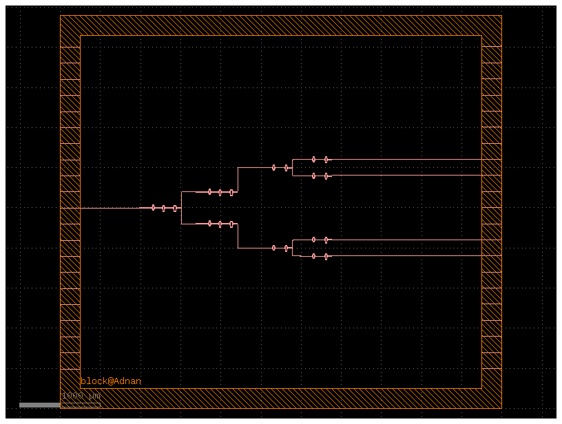
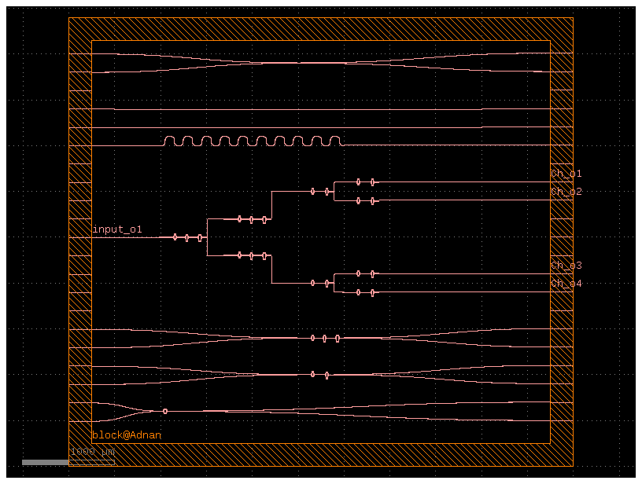

Building a foundation in PIC layout design — from instructor-led training exercises to reproducing layouts from published research, using GDSFactory.
A short introduction about yourself goes here — your background, what you're currently training in (PIC layout design), and what you're aiming to do next.
Add a second paragraph here about your interest in photonics, what drew you to PIC layout design, or any relevant prior experience.
Generic PDK and Cornerstone PDK
CWDM (De)Multiplexer layout based on published work
This section contains the PIC layout designs I developed during my training using GDSFactory. The work includes instructor-provided examples used for learning, as well as a layout based on published research. Together, this helped me understand the design flow of photonic integrated circuits — component placement, routing, and hierarchical cell design.

This layout shows a hexagonal arrangement of cascaded Mach–Zehnder Interferometers (MZIs) integrated with thermal heaters. The design was provided by my instructor as a learning example and was built using the Generic PDK in GDSFactory.
Each MZI has optical splitters, waveguide arms, and combiners. The heaters sit above the waveguides and are used for thermo-optic phase tuning — applying power to a heater changes the refractive index of the waveguide beneath it, which shifts the optical phase in that arm. This is how the interference pattern, and ultimately the device behavior, is controlled.

Working on this layout helped me understand:
This layout is based on a published research paper. I studied the design described in the paper and rebuilt the layout myself, using the Cornerstone PDK in GDSFactory, to understand how the design works and practice building it.


Title: Fabrication-Tolerant CWDM (De)Multiplexer Based on Cascaded Mach-Zehnder Interferometers (MZI) on SOI
Author: Tzu-Hsiang Yen
What I did:
Additional custom PIC layouts and components designed for practice, to build a stronger understanding of PIC development workflows.
Instructor-led training layout of cascaded Mach-Zehnder Interferometers with thermo-optic phase tuning, built using the Generic PDK.
Layout reproduced from a published research paper on a fabrication-tolerant CWDM (de)multiplexer using cascaded MZIs on SOI, built with the Cornerstone PDK.
Interested in my work, or have feedback on these layouts? Feel free to reach out through any of the channels below.